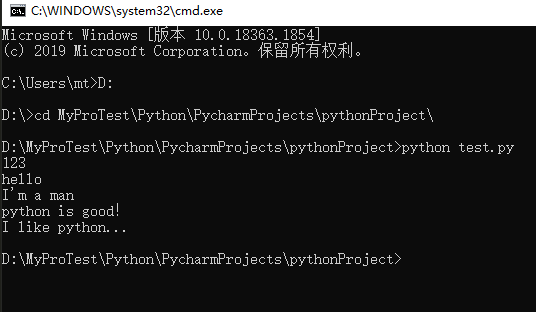
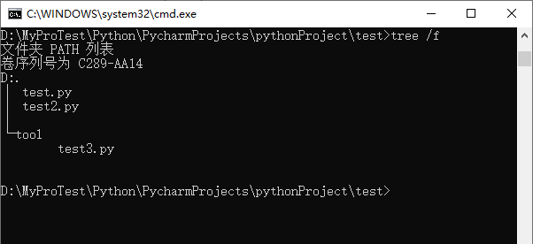
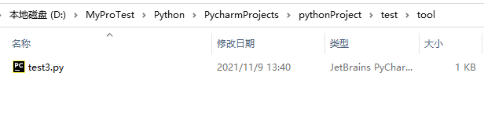

Python 程序的运行是需要python解释器的，如果没有安装python解释器，是无法运行python程序的。
为了解决中情况，python程序的打包就很重要了，打包后的程序中集成了python运行环境，这样在没有安装python解释器的服务器上也就可以运行python程序了。
运行下面命令
pip install pyinstaller如上，显示 Successfully installed 就是安装成功了。
打包使用的命令为
pyinstaller -F python文件名如何实际操作呢？首先，我们需要先写一个 python 脚本。比如新建一个 test.py 文件，文件内容如下：
# -*- coding:utf-8 -*-
print(123)
print('hello')
print("I'm a man")
print('''python is good！
I like python...''')在 Pycharm 中直接右键运行，或者使用windows 自带的 cmd 命令行运行 如下，确定脚本可以正常使用。
然后，用 windows cmd 命令行进入脚本所在目录, 执行命令：pyinstaller -F test.py ，回车如下：

如上，打印出了一堆东西，信息最后提示了生成了一个Windows应用程序 test.exe 文件。那让我们来看下都生成了写什么。
双击启动，或者在 cmd 命令行启动即可运行
这个生成的 test.exe 文件有7M之多，实际的 test.py 脚本文件只有不到 1K。这是因为打包后的 test.exe 文件中包含了python脚本运行的环境在里面。 这样，你自己写的 python 脚本就可以直接发给其他人用了，即使不安装 python 环境也可以运行。
既然是多文件打包，那首先我们来新建一个文件夹 test，然后在文件夹 test 中新建两个文件 test.py、test2.py和文件夹 tool， 然后在 tool 文件夹中新建文件 test3.py。目录树状图和文件路径展示如下：
 三个文件夹中的内容如下：
test.py：
# -*- coding:utf-8 -*-
from test2 import my_add
print(my_add(20, 15))test2.py：
# -*- coding:utf-8 -*-
from tool.test3 import say_num
def my_add(x, y):
z = x + y
return say_num(x, y, z)test3.py：
# -*- coding:utf-8 -*-
def say_num(num1, num2, sum):
return '{0} + {1} = {2}...'.format(num1, num2, sum)接着，先运行程序，确认可以正常运行，如下：
然后就可以使用 pyinstaller -F 命令进行打包了。如下：
如上图所示，执行成功后会在 dist 文件夹下面生成一个 test.exe 文件。这个就是打包好的文件。
上面的方法在少量文件的情况下，使用较好，当一个项目文件很多是显然是不好用的。下面就来讨论下，当打包的项目 python 脚本很多时，应该怎么做。
这第二种方法也是使用 pyinstaller -F 命令，但是执行的对象不同。
还是用上述的 test 例子来说明。
首先，用 windows cmd 命令行进入 test 脚本所在目录, 执行命令：pyinstaller -F test.py ，回车，此时会在 test 目录下生成 build 和 dist 文件夹， 还生成了 test.spec 文件，如下图所示：
删除 build 和 dist 文件夹，保留文件 test.spec，并打开。这个文件是打包时的配置文件，现在我们来修改配置文件，然后使用配置文件进行打包。
打开后的文件内容如下所示：
由于我们 test 程序没有图片、音乐、视屏等资源文件，所以这里只那文件列表来说明。在 block_cipher = None 代码后面添加一个脚本文件列表，然后用这个列表替换掉 Analysis()函数的第一个参数即可。如下所示修改内容
修改完后保存关闭文件，然后执行打包命令：pyinstaller -F test.spec 回车，运行完后，一样会在 dist 文件夹下面生成 test.exe 文件。在文件很多的情况下， 只需要将文件的相对路径添加到 .spec 文件中即可。
值得注意的是：.spec 文件必须放在项目的根目录下，即所有的项目文件必须在 .spec 文件所在的目录中。
py2exe是一个将python脚本转换成windows上的可独立执行的可执行程序(*.exe)的工具，这样，你就可以不用装python而在windows系统上运行这个可执行程序。
py2exe已经被用于创建wxPython,Tkinter,Pmw,PyGTK,pygame,win32com client和server,和其它的独立程序。py2exe是发布在开源许可证下的。
运行下面命令
pip install py2exe如上，显示 Successfully installed 就是安装成功了。
还是以 test.py 文件为例，创建一个 test.py 文件。编辑内容如下：
# -*- coding:utf-8 -*-
print(123)
print('hello')
print("I'm a man")
print('''python is good！
I like python...''')还需要创建一个配置脚本文件，起名为 mysetup.py ,编辑内容如下：
from distutils.core import setup
import py2exe
setup(console=["test.py"])文件结构如下：

然后运行命令：python mysetup.py py2exe ，回车执行，如下图：
运行完之后，会在 mysetup.py 文件路径下生成一个 dist 文件夹，里面就是发布的内容，发布的时候需要将 dist 文件夹中的所有文件一起发布才可以。这样在没有安装 python 的电脑上就也可以运行了。
下面是我将dist中的文件，拷贝到桌面的 fff 文件夹中运行的结果。
发布多个文件是，只需要修改 mysetup.py 文件就可以了。以 pyinstaller 发布多文件的文件为例。mysetup.py 文件内容修改如下：
from distutils.core import setup
import py2exe
setup(console=[
"test.py",
"test2.py",
"tool/test3.py"
])然后运行 python mysetup.py py2exe 即可，一样会生成到 dist 文件夹中。只不过里面会为每个文件生成一个.exe文件。
默认情况下，py2exe在目录dist下创建以下这些必须的文件：
再此强调：发布的时候要将 dist 文件夹下面的所有文件一起发布才可以。
这个配置脚本中还可以设置很多相关的属性。欢迎问度娘，这里不做过多的解释。
禽兽之变诈几何哉？止增笑耳。